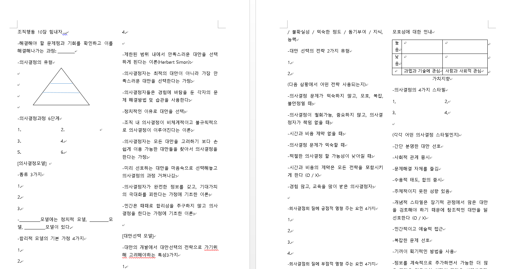

문제은행 만들기!

위 사진은 쌩 암기로 유명한 전공과목인 조직행동을 공부할 때
같이 수강했던 친구들과 만든 문제은행(?)이다.
암기 과목을 공부할 때 저런 학습지는 나름 도움이 되는데,
문제지를 만들 필요 없이 요약정리 한 노트만 있을 때
저절로 빈칸을 뚫어 주는 문제은행 서비스가 있으면 좋을 것 같다는 생각이 들었다.
한글, pdf 등 현재 파일 상관없이 요즘은 글자 인식이 모두 가능해졌고
조사, 접속사는 제외하고 단어 위주로 무작위로 빈칸을 뚫는 것 (빈칸->글씨를 흰색으로 처리하는 등)
의 알고리즘으로 제작이 가능하다.
또한 숫자위주로 된 곳은 무조건 빈칸 등으로 하면 순서나, 단답형으로 많이 출제되는 것들에 대한
문제를 만들 수 있지 않을까 생각.
대학생뿐 아니라, 다른 중고등학생들에게도 유용할 수 있지 않을까 생각..
형광펜 처리한 것은 무조건 빈칸 처리
가령 꺽새표처리 한 안의 숫자는 빈칸의 키워드로 사용하지 않기